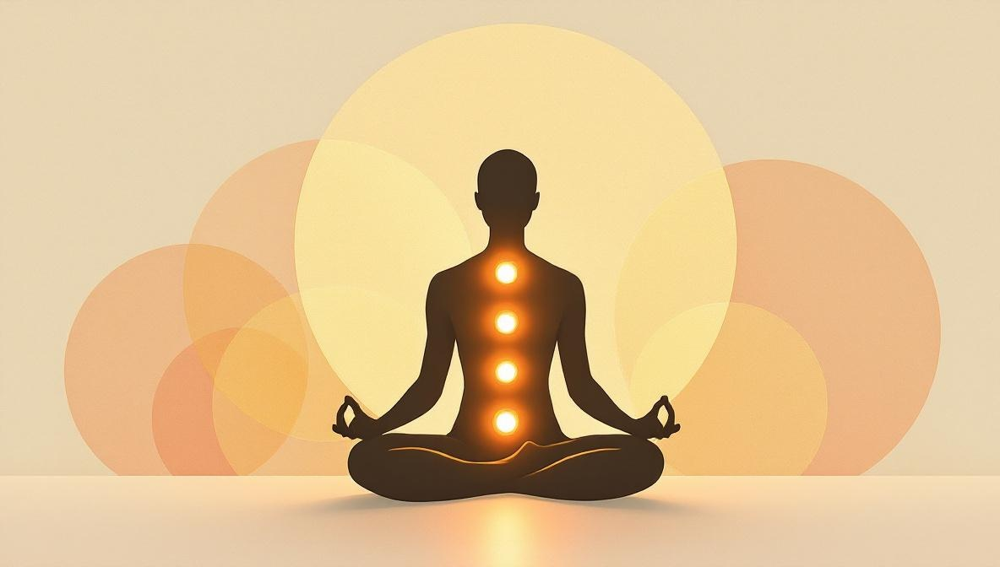
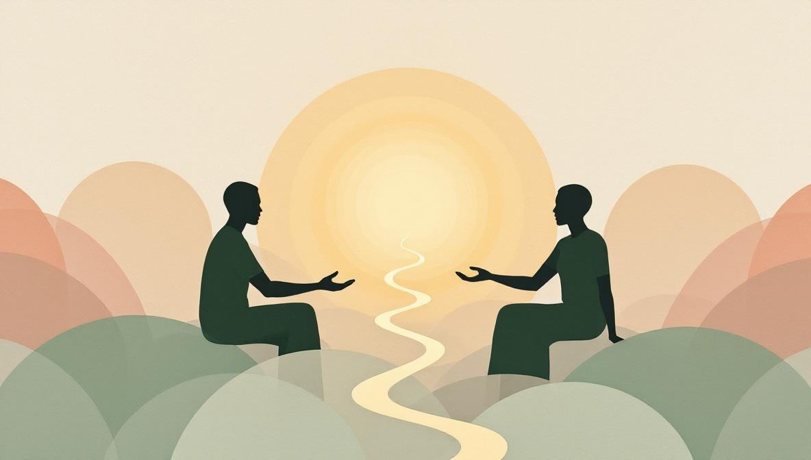

Reiki: la definizione
La parola Reiki deriva da due termini giapponesi: rei (universale) e ki (energia vitale). Il concetto sottostante — che gli esseri viventi abbiano un'energia vitale che può essere canalizzata e riequilibrata — è antico e compare in molte culture: prana nella tradizione indiana, qi nella medicina cinese, mana nella cultura polinesiana.
Ciò che distingue il Reiki da altre pratiche energetiche è il metodo di trasmissione specifico: un praticante formato agisce come canale, posizionando le mani sopra o appena al di sopra del corpo del ricevente per favorire il flusso di questa energia. La sessione non richiede pressione fisica, manipolazione o sostanze di alcun tipo.
Cosa non è il Reiki: non è massaggio, non è psicoterapia, non è medicina e non è una religione. È una pratica complementare — qualcosa che si usa accanto alle cure convenzionali, non al loro posto.
Le origini del Reiki: Mikao Usui e il sistema Usui
Il Reiki è stato sviluppato in Giappone nel 1922 da Mikao Usui (1865–1926), un insegnante spirituale di Kyoto. Dopo anni di studio nelle tradizioni buddhista e shintoista, Usui si ritirò in meditazione per 21 giorni sul Monte Kurama. Al termine del ritiro, riferì un'esperienza potente di luce ed energia — che interpretò come la ricezione della capacità di guarire attraverso l'imposizione delle mani.
Usui fondò la Usui Reiki Ryoho Gakkai (Società per il Metodo di Guarigione Reiki di Usui) a Tokyo e cominciò a insegnare ai suoi allievi, sviluppando un metodo sistematico con posizioni specifiche delle mani, attunement (iniziazioni che aprono lo studente al canale) e tre livelli di formazione. Uno dei suoi allievi, Chujiro Hayashi, aprì una clinica Reiki a Tokyo e formò Hawayo Takata, una donna giapponese-americana che portò la pratica in Occidente negli anni Quaranta.
Oggi esistono centinaia di migliaia di praticanti Reiki in ogni continente. Il metodo Usui originale ha dato origine a numerose varianti — Reiki Karuna, Reiki Holy Fire, Reiki Tibetano — ma il sistema Usui Shiki Ryoho rimane il più diffuso e documentato.
I benefici del Reiki: cosa dice la ricerca
Le prove scientifiche sul Reiki sono in crescita ma ancora limitate, composte principalmente da studi di piccola scala. Ciò che la ricerca ha rilevato in modo consistente:
- Riduzione di stress e ansia. Diversi studi mostrano che il Reiki produce riduzioni misurabili dei livelli di cortisolo e dell'ansia riferita dai pazienti, in particolare in contesti medici e pre-operatori.
- Miglioramento della qualità del sonno. Chi riceve il Reiki riferisce frequentemente un sonno migliore e più profondo nei giorni successivi a una sessione — anche quando non era il motivo principale per cui si era rivolto al trattamento.
- Riduzione del dolore. Soprattutto nel contesto delle cure oncologiche e del dolore cronico, diversi studi hanno documentato una riduzione della percezione del dolore dopo sessioni di Reiki. Il meccanismo non è del tutto chiaro.
- Rilascio emotivo e miglioramento dell'umore. Molte persone descrivono miglioramenti percepibili dell'umore, una sensazione di leggerezza emotiva e una reattività emotiva ridotta nelle ore e nei giorni successivi a una sessione.
- Rilassamento fisico profondo. La risposta del sistema nervoso parasimpatico — lo stato 'riposo e digestione' — viene costantemente attivata durante le sessioni di Reiki, producendo gli stessi marcatori fisiologici della meditazione profonda.
Cosa il Reiki non ha dimostrato di fare: guarire malattie, sostituire i farmaci o garantire risultati specifici. Un praticante che promette queste cose sta fraintendendo la pratica.

I tipi di Reiki: Usui, Karuna, Holy Fire
A partire dal sistema Usui Shiki Ryoho, nel corso dei decenni si sono sviluppate diverse variazioni. Ecco le tre più diffuse:
Reiki Usui (Usui Shiki Ryoho)
La forma originale e più diffusa. Utilizza 12 posizioni standard delle mani che coprono testa, busto e gambe. Il praticante si forma in tre livelli: Livello I (guarigione personale e trattamenti in presenza), Livello II (tecniche a distanza e simboli), Livello III/Master (capacità di formare e iniziare altri praticanti).
Reiki Karuna
Sviluppato negli anni Novanta da William Lee Rand e dall'International Center for Reiki Training. Lavora con un insieme di simboli aggiuntivi orientati a schemi emotivi e karmici più profondi. Richiede un grado di Master Reiki previo.
Reiki Holy Fire
Un'evoluzione più recente (2014) dei sistemi Usui e Karuna, sempre sviluppata da William Lee Rand. Enfatizza un tipo di energia curativa descritta come di qualità superiore e più raffinata. Diffuso tra i praticanti avanzati in Nord America e Europa.
Come si svolge una sessione di Reiki: passo per passo
Che sia in presenza o online, una sessione di Reiki segue una struttura riconoscibile. Sapere cosa aspettarsi elimina gran parte dell'incertezza.
1. Confronto iniziale (5–10 minuti). La sessione inizia con una breve conversazione. Il praticante chiede come ti senti, se hai preoccupazioni specifiche — stress, dolore fisico, pesantezza emotiva — e su cosa vorresti concentrarti. Non è psicoterapia: è orientamento.
2. Preparazione. Per le sessioni in presenza, ti sdrai completamente vestito su un lettino imbottito, spesso con una coperta. Per le sessioni a distanza, trovi un posto tranquillo a casa — divano, letto, cuscino a terra — dove puoi chiudere gli occhi e rilassarti per 45–60 minuti.
3. Il trattamento energetico. Il praticante percorre le posizioni standard delle mani — testa, spalle, petto, addome, gambe — fermandosi qualche minuto su ciascuna. Le mani vengono posate delicatamente sul corpo o appena sopra di esso. In una sessione a distanza, il praticante lavora sulle stesse posizioni energeticamente, spesso guidandoti con la voce all'inizio e alla fine.
4. Riposi. Il tuo unico compito è respirare e ricevere. La maggior parte delle persone chiude gli occhi. Alcuni si addormentano — va benissimo e non diminuisce l'efficacia della sessione.
5. Chiusura e confronto (5–10 minuti). Il praticante segnala la fine della sessione. C'è un breve scambio su cosa hai notato — sensazioni, emozioni, immagini mentali — e suggerimenti pratici: bevi acqua, evita l'esercizio intenso, fai attenzione ai tuoi sogni quella notte.
Reiki a distanza: funziona online?
È la domanda più frequente di chi si avvicina al Reiki per la prima volta. La risposta breve: la maggior parte delle persone che ricevono il Reiki a distanza riferisce la stessa qualità di esperienza rispetto alle sessioni in presenza.
Il Reiki a distanza fa parte della tradizione fin dall'inizio. Al Livello II, i praticanti imparano una tecnica specifica chiamata enkaku chiryo (trattamento a distanza) che, nel sistema Usui, utilizza un simbolo specifico per superare lo spazio. Che tu lo interpreti come un effetto dell'intenzione, dell'attenzione focalizzata o di qualcosa non ancora compreso scientificamente, il risultato pratico è costante: calore, formicolio, rilassamento profondo, cambiamenti emotivi.
Il Reiki a distanza elimina anche le barriere logistiche: non devi spostarti, puoi essere a casa in abiti comodi e hai accesso a praticanti ovunque nel mondo — non solo a quelli nelle vicinanze.

Quante sessioni di Reiki servono?
Non esiste un numero fisso. Ogni persona risponde in modo diverso a seconda di ciò che porta in sessione. Alcune indicazioni generali:
- Per stress acuto o curiosità: spesso una sola sessione è sufficiente per capire chiaramente se il Reiki ti è utile. Molte persone notano un rilassamento significativo già dopo la prima sessione.
- Per stress cronico o difficoltà continuate: la maggior parte dei praticanti suggerisce una serie iniziale di 3-6 sessioni distanziate di 1-2 settimane. Questo consente agli effetti cumulativi di svilupparsi.
- Per mantenimento e prevenzione: molte persone che traggono beneficio dal Reiki continuano con sessioni mensili o bimestrali per mantenere il senso di equilibrio e benessere.
Come scegliere un praticante di Reiki
Il Reiki non ha un unico organismo di certificazione internazionale, quindi le credenziali variano notevolmente. Ecco cosa cercare — e cosa evitare:
- Livello di formazione. Un praticante che offre sessioni dovrebbe essere almeno al Livello II (che dà accesso alle tecniche a distanza e a una gamma più ampia di posizioni delle mani). I praticanti di Livello III/Master hanno completato una formazione avanzata e sono in grado di iniziare altri.
- Comunicazione chiara. Un buon praticante spiega cosa fa, definisce aspettative realistiche e non promette guarigioni o esiti medici specifici.
- Recensioni verificabili. Il passaparola e le recensioni verificabili (non solo le testimonianze sul proprio sito) rimangono il segnale di qualità più affidabile.
- Nessuna pressione. Un praticante professionale non ti preme mai a prenotare una lunga serie di sessioni fin dall'inizio, né afferma che interrompere il trattamento presto ti nuocerà.
Pronto a provare il Reiki online?
Holistic Unity ti mette in contatto con praticanti Reiki verificati per sessioni a distanza — senza supposizioni, senza cercare a caso.
Trova un Praticante ReikiFonti e riferimenti
- International Center for Reiki Training (ICRT): fondato da William Lee Rand, una delle principali organizzazioni internazionali di formazione Reiki — reiki.org.
- NIH NCCIH (USA) sul Reiki: panoramica, evidenze scientifiche e sicurezza — nccih.nih.gov/health/reiki.
- Revisione sistematica Cochrane: So PS, Jiang Y, Qin Y. «Touch therapies for pain relief in adults.» Cochrane Database Syst Rev. 2008; (4): CD006535.
- Origini storiche: il Reiki fu sviluppato nel 1922 da Mikao Usui (1865-1926) in Giappone; la tradizione moderna globale deriva in larga parte dal lignaggio di Hawayo Takata (1900-1980).
Domande frequenti
Il Reiki cos'è esattamente?
Il Reiki è una pratica di guarigione energetica giapponese sviluppata da Mikao Usui nel 1922. Il praticante canalizza energia vitale (ki) verso il ricevente attraverso l'imposizione delle mani, con l'obiettivo di ridurre la tensione, favorire il rilassamento e supportare l'equilibrio del corpo. Non è medicina, non è massaggio e non richiede alcuna credenza religiosa.
Quali sono i benefici del Reiki?
I benefici più frequentemente riportati includono: riduzione di stress e ansia, miglioramento del sonno, rilassamento profondo, riduzione della percezione del dolore, maggiore chiarezza mentale e rilascio emotivo. Le prove scientifiche sono ancora limitate ma in crescita, in particolare per stress, dolore cronico e qualità del sonno.
Quanto dura una sessione di Reiki?
Una sessione di Reiki in presenza dura in genere 60–90 minuti. Una sessione a distanza (online) dura solitamente 45–60 minuti, poiché non è necessario il setup fisico. La prima sessione può essere leggermente più lunga per il confronto iniziale.
Il Reiki a distanza funziona?
Sì. Il Reiki a distanza fa parte della tradizione fin dalle sue origini. La maggior parte dei praticanti e dei riceventi riferisce la stessa qualità di esperienza sia in presenza che a distanza — calore, formicolio, rilassamento profondo, cambiamenti emotivi.
Quante sessioni di Reiki servono?
Non esiste un numero fisso. Alcune persone avvertono un cambiamento significativo già dopo una sola sessione. Per stress cronico o situazioni difficili prolungate, la maggior parte dei praticanti raccomanda una serie iniziale di 3-6 sessioni distanziate di 1-2 settimane, dopodiché si valuta come proseguire.
Il Reiki è sicuro? Ci sono controindicazioni?
Il Reiki è considerato molto sicuro: non prevede sostanze, non comporta manipolazioni fisiche e non ha controindicazioni con i farmaci. È una pratica complementare — non sostituisce cure mediche o psicologiche. Può essere ricevuto da persone di ogni età e condizione fisica.